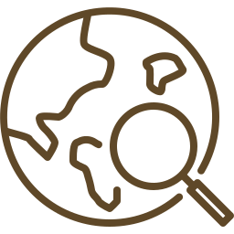

PILIER 01
Préservation du Patrimoine
Immatériel
Documentation rigoureuse des gestes, lexiques
techniques et recettes ancestrales (teintures
minérales, tannage végétal). Nous constituons un
registre historique pour empêcher la disparition des
techniques non écrites.
PILIER 02
Équité & Transparence Radicale
Mise en lumière directe des ateliers sans aucune
commission prélevée. Notre rôle est strictement
informatif et documentaire : permettre la relation
directe pour consolider la juste rémunération des
femmes et maîtres artisans.

PILLER 03
Rayonnement & Pédagogie
Culturelle
Sensibilisation des chercheurs universitaires,
designers, conservateurs et voyageurs éthiques.
Nous favorisons des rencontres conscientes et
respectueuses des rythmes de création ruraux.